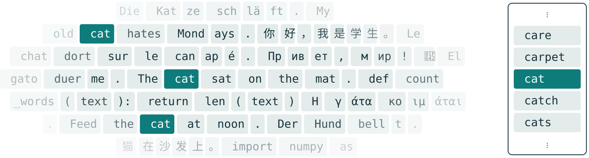
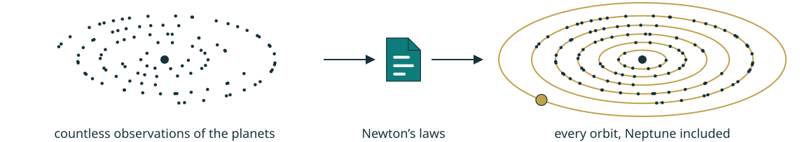
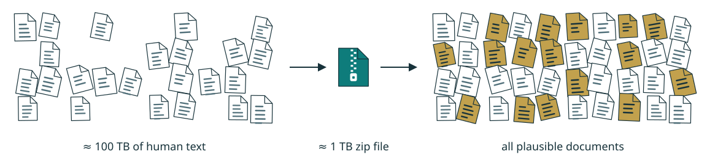
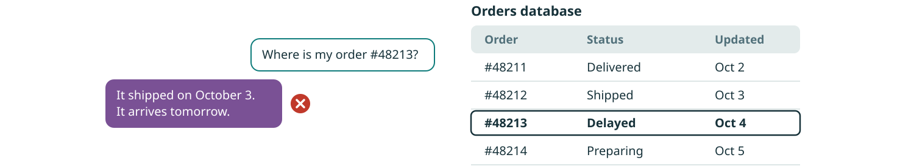
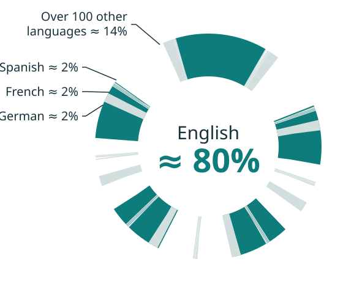
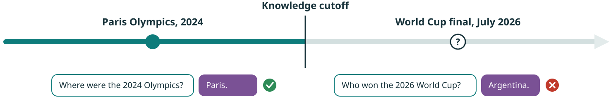

An LLM is one statistical function that understands a text and predicts what follows.
The input text is everything it knows about the task at hand.
Billions of parameters hold everything it learned from human text.
Chatbots, thinking models and agents are all built on this one function.
This chapter shows what “it predicts the next word” means exactly.
Pre-training
Tokenization: encode text for statistics

All human text is encoded with one fixed vocabulary of about 256,000 tokens.
Tokens are frequent small slices of text rather than words.
A rare word is split into several frequent tokens.
Pre-training
Training data: a filtered copy of the public web
Public web pages make up most of the training text.
Most of the raw web is thrown away as spam, duplicates or low quality.
A recent LLM trains on about 10 trillion words of text.
Pre-training
Pre-training: learn by predicting the next token
… schläft auf dem Sofa. Le chat dort sur le canapé. It was late on the edge of town. The cat sat on the mat while the rain fell.你好，我是学生。 Привет, мир! 🙂↵def count_words(text):↵ return len…
The cat
The cat sat
The cat sat on
The cat sat on the
The cat sat on the mat
The LLM predicts each token of the training text from the tokens before it.
The real next token is already in the text, so no labels are needed.
The LLM is far too small to store all text, so predicting well forces it to learn meaning.
Pre-training
Understanding as a form of compression
Information theory equates compressing observations with predicting them.
Predicting beyond simple repetitions takes understanding of what produces the observations.
Understanding generalizes to what was never observed.
Researchers such as Marcus Hutter go as far as defining intelligence as compression.

Pre-training
LLM as a lossy zip file of human knowledge

An LLM can be seen as the compression of all existing human text into a zip file.
Metaphorically, this zip file contains the infinity of all plausible documents.
Compressing human text a hundredfold leaves no choice but some form of understanding.
Pre-training
Not a knowledge base: an LLM stores no records

An LLM stores no records. It cannot look up your order.
It writes a plausible status instead, by reflex.
The fix is to search the database that holds the records.
Pre-training
LLMs are at their best in English

English dominates the web pages, books and code an LLM learns from.
More English text gives the LLM richer answers in English.
Fewer French texts give it thinner facts about French rules, procedures and jargon.
English‑speaking sources shape its norms, references and examples.
Asking in English, then translating, gives better answers in a less common language.
Pre-training
Knowledge cutoff: an LLM stops at a date

The pre-training text stops at the cutoff date. Fine-tuning adds no recent facts.
Everything that happened since then is missing.
One pre-training feeds several assistant versions over a year or more.
The fix is a web search. It brings the recent facts into the conversation.